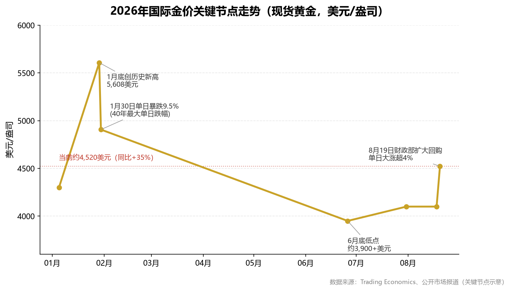
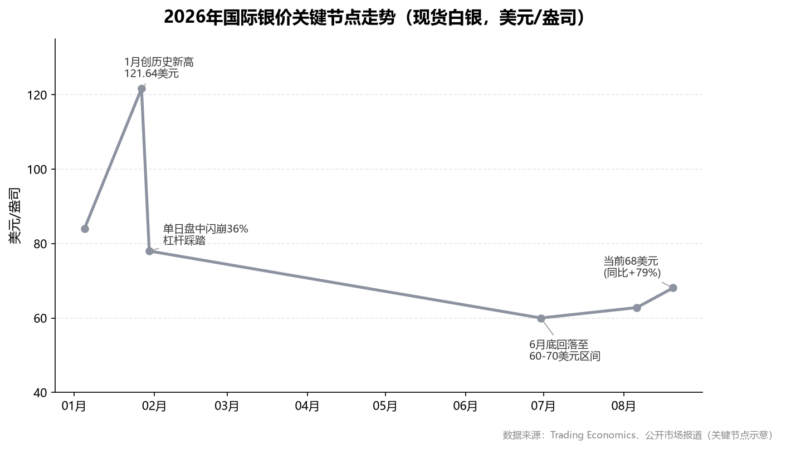
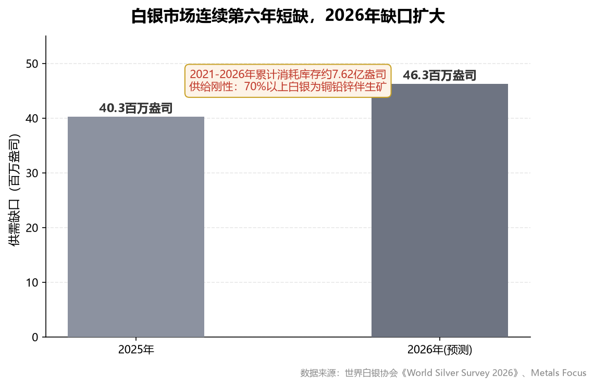
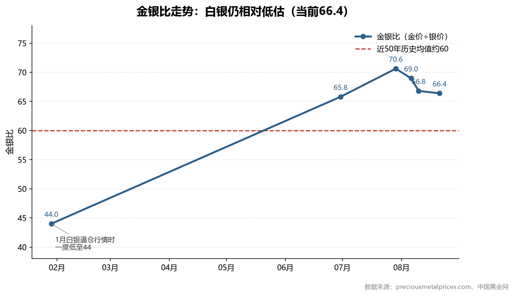
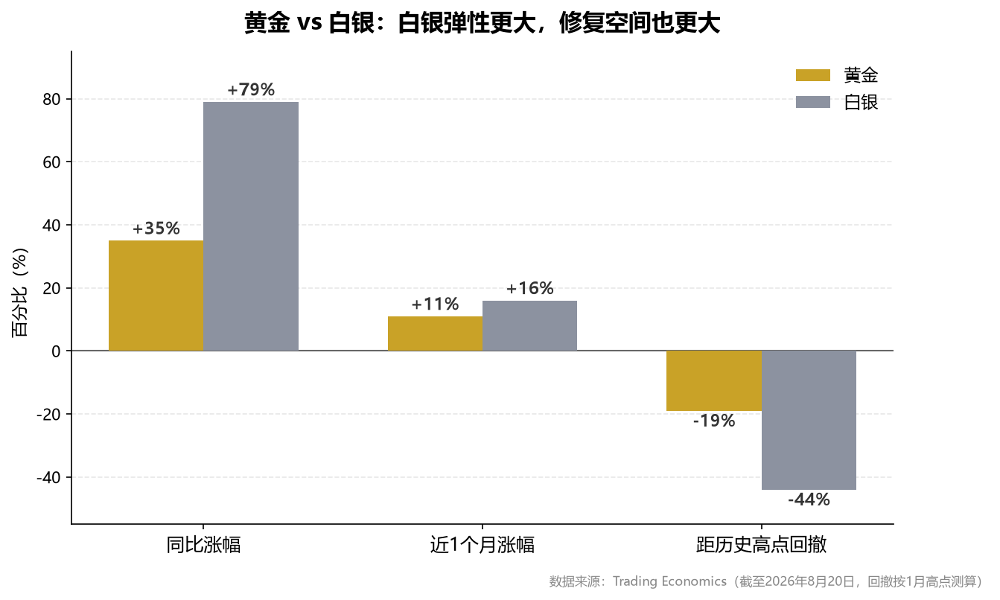

核心逻辑导图
长期支撑（为什么能涨）
- 美债突破40万亿，财政信用折价
- 黄金占全球储备27%，首超美债
- 央行购金Q2达289吨（+62%）
- 45%央行计划增持（历史最高）
- 白银连续6年短缺，累计耗库存7.62亿盎司
短期压制（为什么会波动）
- 美联储鹰派主席沃什，利率维持3.50-3.75%
- 9月FOMC加息概率36.2%
- 油价93美元，通胀粘性3.4%
- 月涨10%+后获利了结压力
- 白银高杠杆，波动为黄金1.5-2倍
品种选择（买哪个）
- 黄金=盾：央行购金托底，底仓配置
- 白银=矛：缺口+弹性，距高点还有44%空间
- 金银比66.4 → 白银相对低估约10%
- 比值>70增配白银，<50减配
操作纪律（怎么买）
- 总仓位≤15-20%，白银≤5%
- 黄金回调4,400-4,450分批介入
- 大涨不追、大跌敢买（逆向思维）
- 9月FOMC前后是加仓/抄底窗口
- 白银跌破58-60严格止损
摘要
行情定位：黄金处于"1月历史高点5,608美元 → 深度回撤30% → 8月重启升势"的修复阶段；白银距1月高点121.64美元仍有约44%空间，弹性显著大于黄金。
核心矛盾：市场处于"财政主导（美国债务突破40万亿美元、财政部干预债市）与货币紧缩（美联储鹰派主席沃什、9月加息概率36.2%）"两股力量的拉锯中。前者决定长期方向向上，后者制造短期剧烈波动。
基本面支撑：全球央行二季度购金289吨（同比+62%）；白银连续第六年短缺；金银比66.4仍高于历史均值60，白银相对低估。
策略判断：黄金为底仓逢回调分批布局；白银为弹性品种，以金银比修复至60-65为中期目标，严控仓位与止损。9月15-16日FOMC会议是四季度前最大的方向性变量。
1. 引言
2026年是贵金属市场极不寻常的一年。黄金在1月冲上 5,608美元 的历史极值后经历40年最大单日跌幅，白银则在触及 121.64美元 后单日盘中闪崩36%。经历上半年的深度调整后，8月美国财政部扩大长期国债回购规模，再度点燃"贬值交易"，贵金属重拾升势。
本报告回答三个问题：本轮牛市的驱动因素是否仍然成立？黄金与白银谁的风险收益比更优？当前时点应如何配置与风控？
2. 行情回顾：从极端狂热到深度洗牌，再到修复重启
2.1 黄金：历史高点后的"V型"修复

| 时点 | 价格（美元/盎司） | 事件 |
|---|---|---|
| 2026年1月初 | 约4,300 | 年初起涨 |
| 2026年1月29日 | 5,608 | 创历史新高 |
| 2026年1月30日 | 单日暴跌9.5% | 沃什提名+CME上调保证金+获利了结，40年最大单日跌幅 |
| 2026年6月底 | 约3,900+ | 最大回撤约30%，击穿4,000关口 |
| 2026年8月19-20日 | 4,522.78 | 财政部扩大回购，单日大涨超4% |
| 2026年8月21日 | 约4,520 | 同比+35%，距高点仍低约19% |
分析：黄金2026年走势分三阶段。第一阶段（1月）杠杆驱动的加速冲顶——单月涨幅超30%、RSI突破90；1月30日鹰派人物沃什获提名出任美联储主席成为导火索，叠加芝商所月内第四次上调保证金，高杠杆多头被迫平仓，形成"下跌—强平—再下跌"的恶性循环。第二阶段（2-6月）货币紧缩定价的深度调整——缩表信号、通胀反弹、美元信用重建推动美元走强，金价最大回撤约30%，二季度黄金ETF净流出45吨，6月单月流出约89亿美元。第三阶段（8月至今）财政主导逻辑下的修复重启——8月19日财政部将10-30年期国债回购上限翻倍至单次40亿美元，长端收益率回落、美元指数跌破99，金价单日大涨超4%。本轮修复伴随SPDR黄金ETF持仓8月增持27.6吨至1,034.65吨，西方资金回流与中国机构在4,000美元关口的抄底形成东西方共振。
1月的暴跌不是牛市终结，而是杠杆出清；8月的重启不是情绪反弹，而是财政信用折价的长逻辑定价。
2.2 白银：腰斩之后，弹性正在回归

| 时点 | 价格（美元/盎司） | 事件 |
|---|---|---|
| 2025年12月 | 约84 | 2025年全年+42%后的高位 |
| 2026年1月底 | 121.64 | 创历史新高，金银比一度低至44 |
| 2026年1月30日 | 盘中闪崩36% | 约12万杠杆交易者爆仓42亿美元 |
| 2026年6-7月 | 60-70区间震荡 | 腰斩后筑底 |
| 2026年8月20日 | 68.09 | 两个月新高，同比+79% |
分析：从121.64美元到60美元附近，白银最大回撤接近50%，远超黄金的30%——这正是白银的典型特征：市场规模仅为黄金的约十分之一、杠杆资金占比更高，波动率通常是黄金的1.5-2倍。但深度出清也意味着筹码结构大幅改善：伦敦市场可自由流通库存已从2025年9月底约1.36亿盎司的极度紧张状态回升至约2.5亿盎司，挤仓风险明显缓解。8月银价在61-62美元支撑区确认后重新站上68美元，月内涨幅约16%强于黄金的11%；同比涨幅79%约为黄金的2.3倍，弹性回归信号已经明确。
白银从来不会因为"便宜"而上涨，只会因为"弹性+资金回流"而暴涨——现在两个条件都在出现。
3. 宏观驱动：财政主导与货币紧缩的拉锯战
3.1 财政主导：贬值交易的长逻辑
| 关键事实 | 数据 |
|---|---|
| 美国联邦政府债务 | 突破 40万亿美元 |
| 30年期美债收益率 | 5.26%，逼近近20年高位5.34% |
| 财政部干预 | 8月19日10-30年期国债回购上限翻倍至单次40亿美元，并称"还能加码" |
| 黄金占全球官方储备 | 27%（2025年底），超越美债的22%，成为第一大储备资产 |
| 美元储备份额 | 从60%以上降至约50% |
分析：理解当前金价的关键，是理解"谁在替美债信用定价"。30年期美债收益率逼近20年高位，本质是市场对美国长期信用投下的不信任票——收益率上行不再只代表"资金成本上升"，更包含"美元信用折价"。8月19日财政部的回购干预短期压低了收益率、提振金价，但效果仅维持一个交易日，30年期收益率随即重返5.26%。这一细节极其重要：市场对"技术性干预"的信任有限，财政货币化的长期预期反而被强化。对黄金而言，这构成两难中的确定性——无论美联储选择加息抗通胀（债务利息更重、信用更受损），还是容忍通胀（实际利率为负），黄金都是受益方。日本6月减持美债264亿美元、英国减持87亿美元，正是这一逻辑的机构化表达。
3.2 货币紧缩：短期波动的来源
| 关键事实 | 数据 |
|---|---|
| 联邦基金利率 | 3.50%-3.75%，连续5次会议维持不变 |
| 美联储主席 | 凯文·沃什（鹰派），强调价格稳定、减少前瞻指引 |
| 7月FOMC投票 | 9票维持、3票主张加息25基点 |
| 美国CPI（7月） | 3.4%，核心PCE高于3% |
| 9月会议预期（CME） | 维持概率63.8%，加息概率36.2%，降息概率不足1.5% |
| 布伦特原油 | 93.78美元/桶，中东冲突推高通胀粘性 |
分析：下半年贵金属最大的短期逆风，是美联储从"暂停"转向"再加息"的可能性。摩根大通等机构已将9月会议预测调整为加息25个基点；驱动通胀的油价（霍尔木兹海峡通航受限）与关税传导短期难消解。这意味着波动率将维持高位——每次超预期的通胀或就业数据，都可能触发"加息预期升温→实际利率上行→金价回调"的链条。但边界同样清晰：在40万亿美元债务基数上，加息空间被财政承受能力严格限制，紧缩是"有限的紧缩"，这决定了回调深度有限。8月20日金价盘中跌破4,500美元后当日收复、自低点反弹逾2%，正是多空拉锯的现场写照。
长期看财政信用贬值（利多），短期看货币紧缩反复（利空）——贵金属交易的本质是"用短期的波动换取长期的确定性"。
4. 供需基本面：央行购金托底黄金，工业短缺支撑白银
4.1 黄金：央行购金是最坚实的底部力量

| 需求/供给分项 | 2026年二季度 | 2026年上半年 |
|---|---|---|
| 总需求（含场外） | 1,269吨（持平） | 2,522吨（+2%），价值3,800亿美元创新高 |
| 央行购金 | 289吨（+62%） | 345吨 |
| 金条与金币 | 307吨（持平） | 784吨（+21%，2013年以来最强半年） |
| 黄金ETF | 净流出45吨 | 净流入18吨（8月SPDR再增27.6吨） |
| 金饰需求 | 278吨（-17%） | 572吨，消费金额+22%至860亿美元 |
| 金矿供应 | 966吨（+2%） | 回收金-6% |
分析：2026年黄金市场最重要的结构特征，是"西方金融资本卖出、东方实物资本与各国央行买入"的对立统一。二季度ETF净流出45吨的同时，央行净购金289吨（+62%）、金条金币创2013年以来最强上半年——两股力量方向相反，决定了金价"跌不深、底部持续抬升"。央行购金有制度性保障：45%的受访央行计划未来12个月增持，比例创历史纪录。中国央行已连续20个月增持、上半年累计购入40吨，但黄金仅占中国外储8%-10%，对比新兴市场17%-20%的平均水平，增持空间巨大。瑞银预计全年央行购金750-1,000吨，这种"不计价格、按月执行"的刚性买盘，是黄金区别于一切投机资产的核心特征。金饰消费量降17%但金额增22%——黄金的货币属性正在压倒商品属性。
4.2 白银：连续六年短缺，但需求结构正在换挡

| 供需分项 | 2025年 | 2026年（预测） |
|---|---|---|
| 市场缺口 | 40.3百万盎司 | 46.3百万盎司（扩大） |
| 总需求 | 11.31亿盎司 | 约11.3亿盎司（-2%） |
| 工业需求占比 | 约60% | 57%-60% |
| 光伏用银 | 1.87亿盎司（-6%） | 1.51亿盎司（-19%） |
| 电子电气用银 | — | +18%（AI服务器、5G、芯片） |
分析：短缺是硬约束——2026年将录得连续第六年供不应求，缺口扩大至46.3百万盎司；2021-2026年累计约7.62亿盎司的库存消耗把缓冲垫磨到历史低位。供给刚性几乎无解：全球70%以上白银是铜铅锌矿的伴生副产品，新矿山投产需5-10年。但需求结构变化必须正视：光伏"去银化"加速（银包铜、0BB、电镀铜），2026年光伏用银预计下降19%；对冲力量来自AI与电气化——AI服务器单机柜耗银量比传统机型高约30%，新能源车单车用银量为燃油车1.5-2倍，电子电气用银2026年增长18%。中国6月银矿进口同比激增62.5%印证工业补库真实需求。综合判断：短缺托底+工业换挡，白银下行有底、上行有顶，单边翻倍行情难以复制。
黄金买"信用贬值"，白银买"短缺+弹性"——前者是长坡厚雪，后者是锋利的刀。
5. 黄金 vs 白银：金银比视角下的相对性价比


| 维度 | 黄金 | 白银 |
|---|---|---|
| 当前价格 | 约4,520美元 | 约68美元 |
| 同比涨幅 | +35% | +79% |
| 距历史高点回撤 | 约-19% | 约-44%（修复空间大） |
| 波动率 | 基准 | 黄金的1.5-2倍 |
| 核心驱动 | 央行购金、信用对冲 | 货币逻辑+工业短缺（双重属性） |
| 机构目标价 | 德银/瑞银年底4,600；花旗4,500 | 摩根大通均价81；汇丰75；花旗70；美银看100+ |
| 角色定位 | 底仓、压舱石 | 弹性增强、进攻仓位 |
分析：当前金银比 66.4，高于近50年均值60，白银相对低估约10%。历史规律显示，贵金属牛市中后段资金往往从黄金溢出追逐白银：若金银比回归至60-65，银价有约10%修复空间（看75-76美元）；若回归55-60，可看78-80美元，与摩根大通81美元全年均价预测形成交叉验证。但须强调两个约束：其一，金银比回归不具备必然性——1月曾低至44，极端环境下也可能长期高位；其二，弹性是双刃剑——白银仓位必须轻于黄金、止损必须严于黄金。合理结构是"黄金为盾、白银为矛"：比值高于70时增配白银，低于50时减配白银，动态再平衡。
金银比66意味着"黄金已经证明了自己，白银还在等待证明"——而后者往往才是超额收益的来源。
6. 风险因素：必须直视的四只"灰犀牛"
| 风险 | 触发条件 | 影响 | 概率评估 |
|---|---|---|---|
| 9月FOMC加息 | 8-9月通胀数据超预期 | 实际利率上行，贵金属快速回调5-10% | 中（CME概率36.2%） |
| 获利了结 | 金价月涨10%+后情绪过热 | 短线回调至4,400-4,450 | 中高 |
| 杠杆踩踏重演 | CME再度上调保证金 | 白银闪崩风险（参考1月30日） | 低-中 |
| 光伏去银化超预期 | 银包铜技术规模化提前 | 白银工业需求预期下修 | 中（慢变量） |
分析：风险排序比罗列更重要。首位是9月15-16日FOMC会议——基准情形（63.8%）维持利率，贵金属延续修复；若8月CPI再上行（油价93美元的传导尚未完全体现），加息落地将触发5%-10%回调。第二是拥挤度风险：金价月涨超10%、银价涨超16%后获利盘堆积，1月30日的暴跌证明"涨得快"本身就是风险。第三是白银特有风险：iShares白银ETF持仓8月反复（15,275吨，较高点回落），若ETF持续流出叠加CME上调保证金，可能重演闪崩。第四是慢变量：光伏去银化逐年压缩白银工业叙事空间，白银的工业属性炒作需要"见好就收"。应对风险的唯一有效方法，是事先确定仓位上限、分批节奏和止损纪律，而非临阵决策。
贵金属的风险从来不在于"逻辑错了"，而在于"用错误的仓位交易正确的逻辑"。
7. 投资策略：以黄金为盾、以白银为矛
7.1 配置框架
| 品种 | 角色 | 建议仓位 | 布局方式 | 目标位 | 纪律 |
|---|---|---|---|---|---|
| 黄金（ETF/金条） | 核心底仓 | 5%-15% | 回调至4,400-4,450分批买入 | 4,600→4,790（12个月） | 底仓不止损，单日大涨4%后不追 |
| 白银（ETF/期货） | 弹性进攻 | ≤5% | 金银比>70增配；回调至61-65介入 | 75-80（金银比回归60-65） | 跌破58-60严格止损 |
| A股贵金属板块 | 弹性替代 | 视风险偏好 | 金银价回调但股价抗跌时介入 | — | 波动大于实物，仓位减半 |
7.2 具体投资标的（截至2026年8月20日）
（1）实物与基金类——底仓工具（适合所有投资者）
| 标的 | 代码 | 定位与介入逻辑 | 注意事项 |
|---|---|---|---|
| 华安黄金ETF | 518880 | 跟踪国内金价，规模与流动性居首，底仓首选 | 金价回调至4,400-4,450美元区间分批买入 |
| 易方达黄金ETF | 159934 | 同类备选，费率相当 | 同上 |
| 银行积存金/投资金条 | — | 超长期压舱石，忽略短期波动 | 只在回调时加，不追高 |
| 国投瑞银白银期货LOF | 161226 | 国内唯一白银主题基金，无期货账户者的白银工具 | 跟踪沪银期货，存在移仓损耗，适合波段不适合长持 |
| SPDR GLD / iShares SLV | 美股 | 有境外账户者的直连工具 | 注意汇率因素 |
（2）黄金股——弹性主力仓
| 标的 | 代码 | 核心逻辑（买入理由） | 估值锚与目标 |
|---|---|---|---|
| 山东黄金 | 600547 | A股纯金龙头。2026年Q1净利同比+102%，克金成本仅220-250元/克，金价上涨几乎全部转化为利润；中期分红10派1元 | 2026年一致预期净利68-72亿元，前瞻PE仅16-17倍（历史中位25-30倍）；若回归25倍PE，对应市值1,700亿以上 |
| 赤峰黄金 | 600988 | 民营弹性标的。上半年预增54%-61%，黄金销售均价同比+43%，机制灵活、产量爬坡 | 8月20日涨停，弹性大于山金，回调时优先布局 |
| 中金黄金 | 600489 | 央企压舱石。上半年预增52%-71%，金铜双属性，硫酸等副产品增厚利润 | 估值低于民营同行，防御性强 |
| 紫金矿业 | 601899 | 确定性最强的矿业龙头。8月20日特大单净流入18.21亿元居两市首位 | 铜属性稀释纯金弹性，适合作为有色综合配置 |
| 黄金股ETF | 517520 | 一键打包，规避个股黑天鹅 | 适合不想选股的投资者，弹性约为金价2倍 |
（3）白银股——高弹性卫星仓（仓位须轻于黄金股）
| 标的 | 代码 | 核心逻辑（买入理由） | 风险提示 |
|---|---|---|---|
| 兴业银锡 | 000426 | 白银首选。手握中国34.56%白银储量（亚洲第一、全球第七）；上半年预增169%-198%；8月19日动态PE仅11.93倍；银漫二期2028年投产、宇邦扩建后白银产量有望达1,000吨/年；8月26日分红登记、8月29日披露中报 | 要约收购*ST威领存在市场争议；8月20日已涨停，短线追高需谨慎，等回踩 |
| 盛达资源 | 000603 | A股唯一以独立原生银矿为主业的标的，银价纯度最高；市值约230亿元，小盘高弹性；鸿林矿业铜金矿已投产；8月12日获广发、泰康等机构调研 | PE TTM约27倍高于兴业；8月18日出现股民维权征集信息（信披争议），仓位应更轻、止损应更严 |
（4）进出场触发条件（明确执行规则）
| 操作 | 触发条件 | 对应动作 |
|---|---|---|
| 买入 | 金价回调至4,400-4,450美元 | 加仓黄金ETF、山东黄金 |
| 买入 | 金银比升至70以上 | 加仓白银标的（兴业银锡优先） |
| 买入 | 9月FOMC若加息引发恐慌性回调 | 逆向买入窗口，分批抄底 |
| 买入 | 兴业银锡8月29日中报超预期且股价回踩不破 | 加仓白银首选标的 |
| 止盈 | 金价接近4,600-4,790美元 | 黄金仓位分批兑现 |
| 止盈 | 兴业银锡接近48-51元机构目标区 | 分批兑现（国泰海通目标价48.4元） |
| 止盈 | 金银比回落至50以下 | 白银仓位换回黄金 |
| 止损 | 白银股自买入价下跌15% | 无条件离场 |
| 止损 | 金价有效跌破4,350美元 | 黄金股减仓，保留实物底仓 |
分析：标的组合的逻辑是"三层结构"——第一层实物/ETF提供确定性，赚金价本身的钱；第二层黄金股（山东黄金+赤峰黄金为核心）提供经营杠杆，历史规律显示金矿股在金价上行期的涨幅约为金价的2倍，且当前板块估值（山金前瞻PE16-17倍）处于历史底部区域，即便金价横盘，仅靠业绩兑现（板块上半年普遍预增50%-260%）也有修复空间；第三层白银股（兴业银锡+盛达资源）提供最大的价格弹性，但必须以最小仓位参与——兴业银锡11.9倍动态PE对应169%-198%的利润增速、PEG远小于1，是板块中罕见的"低估值+高增速"组合，但其收购争议与盛达资源的信披争议提醒我们：弹性标的的每一分钱仓位都要有止损预案。执行上建议"底仓+机动仓"分离：底仓（ETF+山东黄金）中期持有不动，机动仓利用板块日内波动做T降低成本——板块单日急拉5%以上时卖出机动仓，回调2-3%时接回。需特别注意，8月20日贵金属板块已集体大涨（多股涨停），短线追高风险大，理想的介入时点是板块缩量回踩5日均线或金价回踩4,400-4,450美元支撑之时。
金价涨30%，山东黄金们能赚翻倍，兴业银锡们能赚两倍——但反过来也成立，所以仓位的大小必须与波动的承受力匹配。
7.3 节奏与关键时点
第一步（8月下旬）：金价月涨10%后不追高，等待获利了结的回调——4,400-4,450美元是前期震荡平台顶部的"顶底转换"支撑区，为分批介入第一目标区；白银对应关注65美元附近。
第二步（9月中旬FOMC前后）：全年最重要的分歧窗口。若维持利率不变（基准情形），确认升势可顺势加仓；若意外加息引发恐慌回调，恰是逆向布局的黄金坑——40万亿债务约束下加息不可持续，紧缩定价越极端，随后修复越确定。
第三步（四季度）：若通胀见顶回落+财政回购加码，贵金属有望挑战前高——黄金看4,600-4,790，白银看75-80。
三条纪律：①仓位纪律——贵金属总仓位不超过可投资产15%-20%，白银不超过5%；②工具纪律——配置资金优先实物金条、黄金ETF等无杠杆工具，期货仅限小仓位严格止损；③情绪纪律——逆向思维，单日大涨全网热议时不追（参考1月冲顶），恐慌回调、加息预期最浓时敢买（参考6月底部）。
这轮行情的正确姿势不是"预测顶部"，而是"底仓不动+回调敢买+大涨不追"。
8. 结论
贵金属市场正在经历定价范式的深刻切换：从"利率与美元的机会成本定价"转向"财政信用与货币体系重构的定价"。40万亿美元的联邦债务、逼近20年高位的长端收益率、黄金超越美债成为全球第一大储备资产——这些事实共同指向：本轮牛市的底层逻辑（美元信用折价与全球储备多元化）不仅没有因上半年的深度回调而削弱，反而在回调中获得了央行购金289吨、金条金币需求创13年新高的数据确认。黄金与白银的分化揭示了市场的层次：黄金是机构与央行的"确定性资产"，白银是叠加工业短缺叙事的"弹性资产"，金银比66.4隐含的相对低估为后者保留了修复空间。短期而言，9月FOMC加息博弈与月内10%涨幅后的获利了结压力，决定波动仍将是常态；但供给刚性（央行购金、白银六年短缺）与需求韧性（AI与电气化用银）构成的基本面底盘，使每一次紧缩预期引发的回调都更接近机会而非风险。客观地说，贵金属已不处于"便宜的起点"，而是处于"昂贵但有支撑的中段"——这要求以配置而非投机的心态参与，用仓位管理和分批纪律消化高波动，用金银比的动态再平衡获取相对收益。
9. 参考文献
- 世界黄金协会. 2026年二季度《全球黄金需求趋势报告》[EB/OL]. china.gold.org, 2026-07-30.
- 世界黄金协会. Central Bank Gold Statistics: Central banks remain committed to gold[EB/OL]. gold.org, 2026-07.
- The Silver Institute & Metals Focus. World Silver Survey 2026[EB/OL]. silverinstitute.org, 2026-04.
- Trading Economics. Gold / Silver - Price, Chart, Historical Data[EB/OL]. zh.tradingeconomics.com, 2026-08-20.
- 上海证券报. 黄金，多极时代的新底仓？[EB/OL]. 2026-08-20.
- 华尔街见闻. 早餐FM-Radio 2026年8月21日[EB/OL]. 2026-08-21.
- 每日经济新闻. 美联储9月维持利率不变的概率为63.8%（CME美联储观察）[EB/OL]. 2026-08-21.
- Polymarket Intel. Polymarket Signals Strong Doubt on Fed Rate Cut in September 2026[EB/OL]. 2026-08-14.
- 中国黄金网. 金价涨了，银价也可能迎来补涨机会？[EB/OL]. 2026-08-07.
- Discovery Alert. Silver Market Deficit Widens in 2026 Despite Falling Solar Demand[EB/OL]. 2026-08-20.
- 什么值得买. 白银半年坐过山车：从120到60被套还是机会？[EB/OL]. 2026-08-06.
- 什么值得买. 2026年1月30日国际金价单日暴跌超12%，创40年最大跌幅[EB/OL]. 2026-02-01.
- preciousmetalprices.com. Gold-Silver Ratio Current & Historical[EB/OL]. 2026-08-21.
- 新浪财经. 对话鲁政委、宋雪涛：2026年金价反常走势背后的核心逻辑[EB/OL]. 2026-07-22.
- 中新经纬. 多家黄金股预喜：招金、西部上半年净利涨数倍，中金、赤峰等两位数增长[EB/OL]. 2026-07-14.
- 东方财富网. 为什么是兴业银锡（储量、产能、估值分析）[EB/OL]. 2026-08-19.
- 东方财富网. 快速拉升！黄金股，掀"涨停潮"[EB/OL]. 2026-08-20.
- 山东黄金矿业股份有限公司. 关于2026年中期利润分配方案的公告[EB/OL]. 证券日报, 2026-07-22.
- 同花顺财经. 兴业银锡(000426)公司资料与异动提醒[EB/OL]. 2026-08-20.